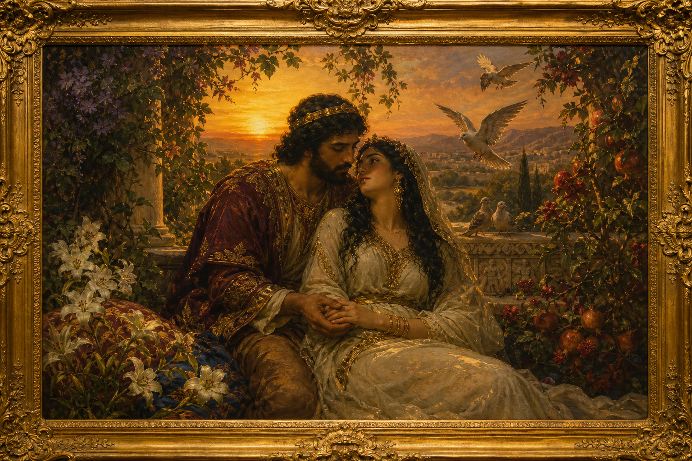

Old Testament · Book 22 of 39
Song of Solomon
A bride and bridegroom delight in each other without shame or hiding — a love poem that honours marriage as good, and that believers have long heard echoing the Bridegroom's love for his people.
Song of Solomon is a love poem, unlike any other book in Scripture, celebrating the delight, longing, and faithfulness between a bride and her beloved. Told through alternating voices, it moves through courtship, separation, searching, and reunion, treating romantic love and marriage as a good and God-given gift, worth celebrating rather than hiding. Many readers through history have also heard in it an echo of the covenant love between the Lord and his people, and ultimately Christ and his church.
Many waters cannot quench love, neither can the floods drown it.
What happens in Song of Solomon
The Song opens with the bride's longing for her beloved's affection and the mutual admiration between the two, as they praise each other's beauty in vivid, poetic imagery drawn from gardens, spices, and the natural world. Their courtship includes a season of searching, when the bride seeks her beloved through the city at night and cannot find him, and tender descriptions of desire fulfilled once they are reunited. Other voices join the poem, including companions who observe and comment on the lovers. By the final chapters, their love is described as a seal upon the heart, stronger than death, and unable to be quenched by many waters, closing with a longing for continued nearness between the two. Throughout, the book treats physical and emotional love within marriage as beautiful and worth celebrating openly, framed by consistent faithfulness and exclusive devotion between the two lovers.
Why it matters
Song of Solomon matters because it affirms, within the pages of Holy Scripture, that romantic love and marriage are good gifts from the Creator, not things to be embarrassed by or hidden. It gives dignity to desire, patience, and faithfulness between a husband and wife, modelling a love that is exclusive, celebratory, and enduring. Many believers across the centuries have also read it as a picture of the tender, pursuing love of God for his people, a Father and Bridegroom who delights in his own and calls them to delight in him in return, reminding every reader that love, rightly ordered, reflects something of the heart of God himself.
Jump to a chapter
Song of Solomon has 8 chapters — select one to begin reading there.